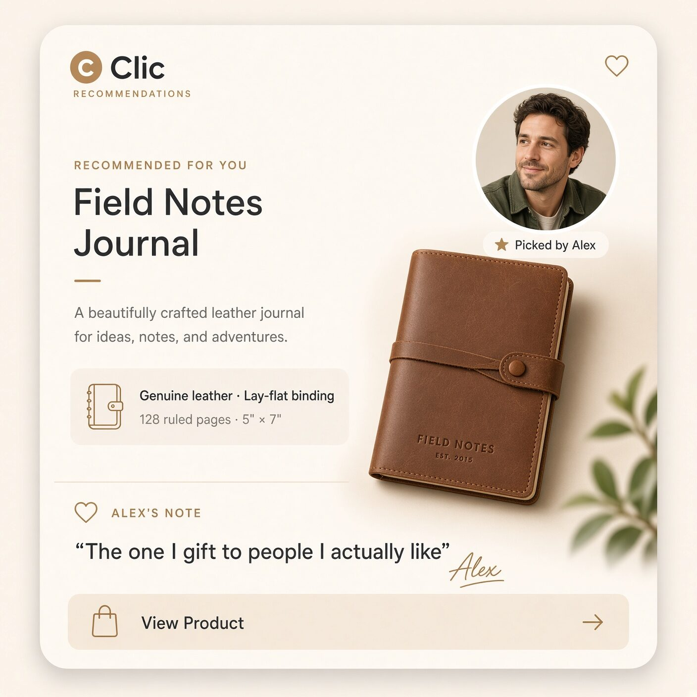
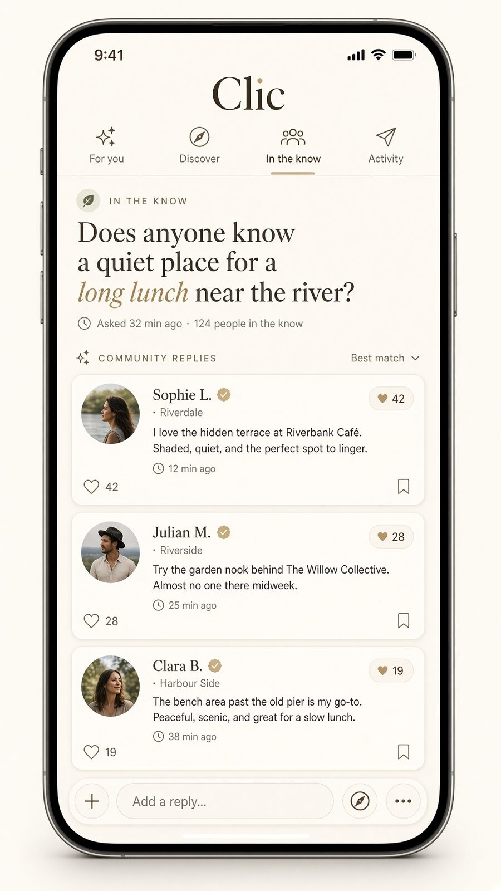
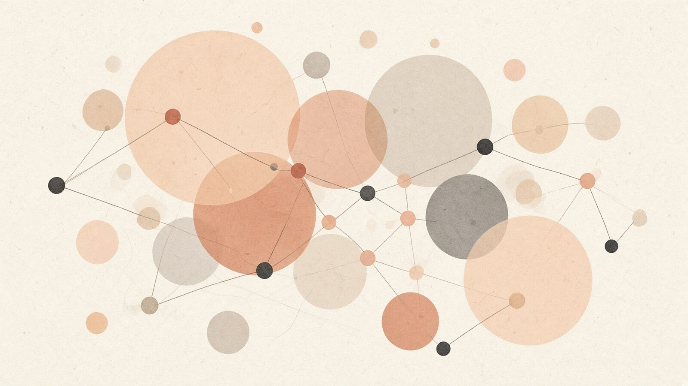

Concept · In the Know
Ask the people who get it.
Clic is an invite-only community where personal recommendations for places and things stay with the person who made them — and where you can ask when you need one.
The question vanishes
“Does anyone know a good…?” gets asked in chats, answered once, and lost. The good tip never becomes a place you can return to.
Strangers don’t know you
Anonymous reviews optimize for averages. Clic optimizes for people whose judgment you actually care about.
In the know
Ask the room. Keep the answers.
When you need a recommendation, you don’t shout into the void. You ask a community that knows — and every reply still has a face and a reason.
Does anyone know a quiet place for a long lunch near the river?

Illustrative UI · fictional question and members

A quiet network of people whose taste you trust.
Invite-only by design. Not for everyone — for the people you would actually ask. Discover their Places and Things. Share your own. Ask when you need the room.
Share what you love
Recommendations go both ways.

Be in the know.
Bring someone with you.
Clic is invite-only. If the people whose taste you trust are already here, ask them. Or request an invite of your own.
Prototype action · no waitlist is connected yet